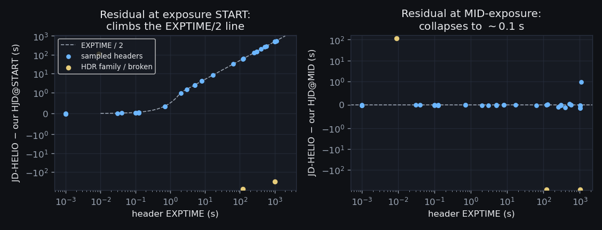
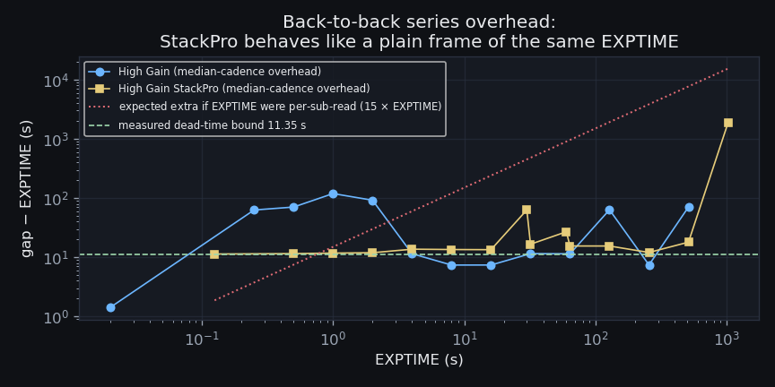
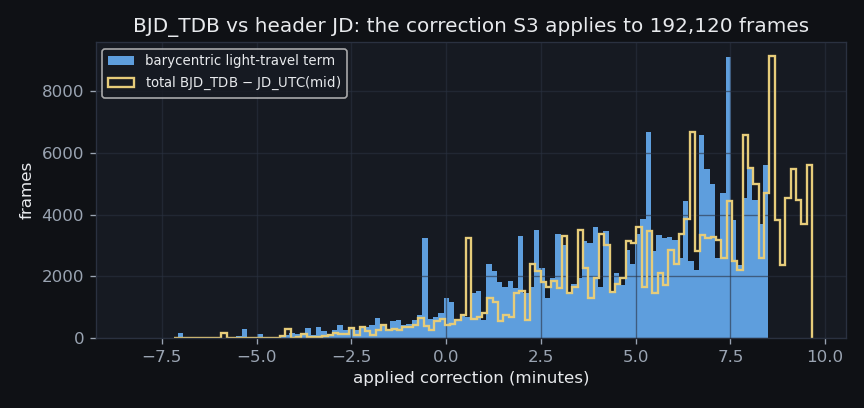
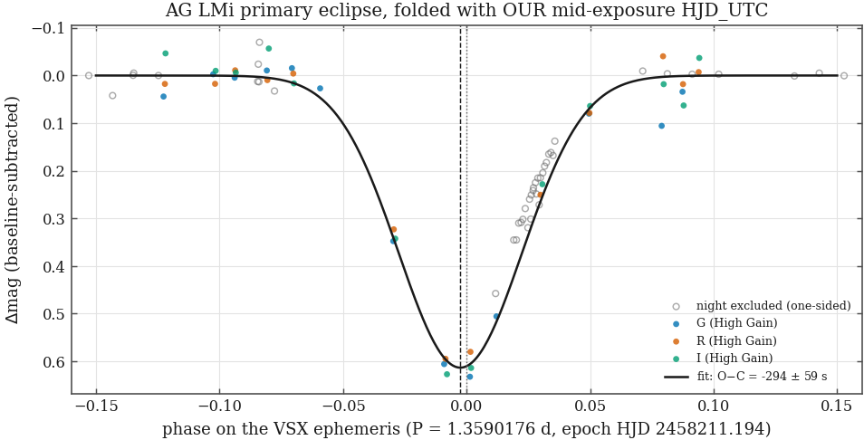
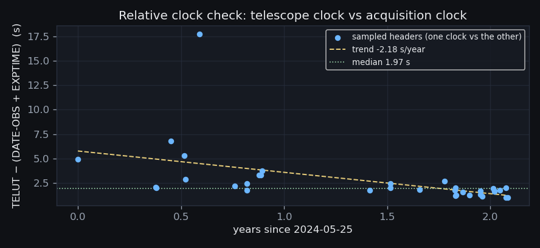

198,289 header stamps audited · 191,858 of
193,318 canonical science frames with mid-exposure BJD_TDB
(ephemeris de440s) ·
absolute clock consistent with zero at the ~75 min level set by AG LMi's ephemeris · built 2026-08-19T23:47Z
(S3 v1.0 (2026-08-18),
commit 2c897e7)
· back to the evidence hub
Every MACRO paper folds its data on a period; a half-exposure ambiguity in the time stamp would smear or shift every phase. The headers offer JD, DATE-OBS, and JD-HELIO — do they agree, and which instant of the exposure do they name?
First, internal consistency: header JD against header DATE-OBS for all 198,289 canonical frames carrying both cards, by readout family:
| readout family | frames | median (s) | p1 (s) | p99 (s) | max |diff| (s) | > 0.1 s | stamp resolution (s) |
|---|---|---|---|---|---|---|---|
| Mode0 | 70,720 | 0.000 | 0.000 | 0.000 | 211.220 | 1 | 0.001 |
| Fast | 52,516 | 0.000 | 0.000 | 0.000 | 0.001 | 0 | 0.001 |
| High Gain | 26,456 | 0.000 | 0.000 | 0.001 | 0.001 | 0 | 0.001 |
| 1MHz High Sensitivity 16-bit | 22,582 | 0.000 | 0.000 | 0.001 | 0.002 | 0 | 0.001 |
| High Gain StackPro | 20,429 | 0.000 | 0.000 | 0.001 | 0.001 | 0 | 0.001 |
| (blank) | 3,896 | 0.000 | 0.000 | 0.000 | 0.000 | 0 | 1.000 (whole seconds) |
| Low Gain | 822 | 0.000 | 0.000 | 0.001 | 0.001 | 0 | 0.001 |
| 5MHz High Sensitivity 16-bit | 746 | 0.000 | 0.000 | 0.001 | 0.002 | 0 | 0.001 |
| 3MHz High Sensitivity 16-bit | 90 | 0.000 | -0.000 | 0.000 | 0.000 | 0 | 0.001 |
| HDR | 16 | 0.000 | 0.000 | 0.001 | 0.001 | 0 | 0.001 |
| None | 16 | 0.000 | 0.000 | 0.000 | 0.000 | 0 | 0.001 |
The two cards are the SAME instant to
0.002 s (their write precision) in every family, with
exactly 1 exception:
reduced/2025-11-01/mjm_M57_r_30s_2025-11-01T03-12-25.fts.fz (2025-10-31),
whose JD sits 211.2 s from its DATE-OBS — a
reduced-tree frame whose JD the reduction pipeline re-stamped, the
S0b stem_jd_drift behavior.
This comparison has a blind spot, and it is the
important part of this section. It can only catch a re-stamp that
moved ONE card. When the reduction pipeline re-stamped BOTH, the copy
stays perfectly self-consistent and passes here — while disagreeing with
its own raw parent about when the photons arrived. S0b already measured
those cases: joining raw_reduced_links to the time axis
finds 46 exposures whose two copies disagree by more than
10 s, the worst by
4200 s
(reduced/2025-11-02/mac_fo_aqr_g_120s_2025-11-02T02-25-45_0.fts.fz). S3
therefore withdraws the BJD of the reduced copy in every one of them
(jd_disagrees_with_raw_parent, listed in
s3_time_outliers) and carries
sibling_jd_drift_s on every row that has a linked sibling,
so a re-stamped time is visible where a consumer will actually look.
Second, which instant: 40 headers sampled across era families and years (38 carry JD-HELIO). We recomputed the heliocentric correction independently (astropy, DE ephemeris, Winer coordinates) at the exposure START and at MID-exposure:

The acquisition software computed JD-HELIO at start + EXPTIME/2 — which simultaneously proves the base stamp is the START and hands us an independent check of the mid-exposure arithmetic. Third, the telescope-clock card TELUT (written with the rest of the header, after readout) sits at DATE-OBS + EXPTIME + a small constant: slope of TELUT−DATE-OBS against EXPTIME over the 14 sampled headers whose TELUT is genuinely a second clock read = 0.997 (1.0 = header written one full exposure after the stamp). 2 further rows are EXCLUDED from that fit because their TELUT is byte-identical to DATE-OBS — a copy, not a clock read, contributing an uninformative (EXPTIME, 0) point that would pull the slope to 0.901 and silently credit those eras with evidence they do not have. 3 sampled headers FAIL the mid-exposure test:
| family | year | EXPTIME (s) | resid@START (s) | resid@MID (s) |
|---|---|---|---|---|
| HDR | 2023 | 120.00 | -775.95 | -835.95 |
| HDR | 2023 | 1024.00 | -324.03 | -836.01 |
| Mode0 | 2025 | 0.01 | 115.27 | 115.27 |
Both probes are therefore missing for exactly the same
frames — the 2026 pyscope eras, which write no JD-HELIO card
at all and copy DATE-OBS into TELUT. Those same frames stamp DATE-OBS at
WHOLE-SECOND resolution (column above): a 1 s granularity where
every MaxIm family writes milliseconds, i.e. up to 0.5 s of
systematic if pyscope truncates rather than rounds. The frames with no
start-vs-mid evidence at all:
| readout family | frames | eras | nights | what is missing |
|---|---|---|---|---|
| (blank) | 3,901 | 81–82 | 2026-06-28 – 2026-07-02 | no JD-HELIO card; TELUT is a copy of DATE-OBS |
| HDR | 16 | 5 | 2023-04-17 – 2023-11-22 | JD-HELIO present but broken / no discriminating exposure |
frame_times.start_evidence =
unverified_no_helio_no_telut. Header JD-HELIO is never used as a
time stamp — it is heliocentric-only (up to ~4 s from barycentric),
UTC-scale (~69 s from TDB), computed by uncontrolled acquisition-software
approximations, and demonstrably garbage in the HDR family. The
re-stamped reduced-tree copies do NOT quietly reinforce the S0 rule: they
were on the shared axis, and this build takes them off it.The era-audit table above is the paper appendix: any
referee asking “how do you know your clocks?” gets pointed at
198,289 internal comparisons, 38 independent
heliocentric recomputations, and the TELUT cross-check — all
regenerable by one script. Two gaps are named rather than papered over,
and both are cheap to close: a one-line citation of the pyscope source
would settle start-vs-mid for 3,917 frames, and the
UT and MJD-OBS cards those headers do carry are
a second, unused probe.
A StackPro frame is the on-camera SUM of 16 sub-reads (S2's PTC result). Header EXPTIME could mean the total span or the per-sub-read time, and any dead time between sub-reads would shift the photon-weighted midpoint. What is the mid-time of 20,364 StackPro science frames, and what is the worst case if the contiguity assumption is wrong?
The first question is settled and stays settled: EXPTIME is the TOTAL span, not the per-sub-read time. If it were per-sub-read, back-to-back gaps would have to exceed 16 × EXPTIME; the smallest genuine gap falls BELOW that line in 13 of 15 exposure-time cells. (The 2 that cannot refute it are the shortest exposures, where the camera's fixed per-frame overhead is larger than 16 × a fraction of a second and the test has no power.)

The second question — how big the dead-time ceiling is — turns entirely on the ESTIMATOR, and the obvious one is wrong. Taking the smallest (gap − EXPTIME) over 14,716 StackPro gaps is an extreme order statistic that a single bad time stamp owns outright, and does: it returns 0.24 s, set by these pairs, in which one frame lands about a second from its neighbour inside a series whose own measured cadence is 11–13 s:
| frame | next frame | EXPTIME (s) | gap (s) | the series' own median gap (s) |
|---|---|---|---|---|
iad30012.fts.fz | iad30017.fts.fz | 0.500 | 0.740 | 12.77 |
cdh340f1.fts.fz | cdh340ed.fts.fz | 0.125 | 0.830 | 11.47 |
cjp33783.fts.fz | cjp3377f.fts.fz | 0.500 | 1.140 | 12.03 |
A camera that demonstrably needs ~12 s per frame
cannot deliver two exposures 0.74 s apart. These
are time-stamp defects, not cadence — 45 of them in regular
StackPro series, all listed in s3_cadence_outliers. The
same estimator returns NEGATIVE overheads (a gap SHORTER than its own
exposure, which is impossible) in 12 cells of the
full cadence table: proof that the raw minimum is not measuring
anything.
So the bound is taken robustly instead. Each same-config run contributes its MEDIAN gap (one bad stamp cannot move a median); runs whose cadence is regular to 15% interquartile spread (313 of them) are read as machine cycle times; and the smallest (median gap − EXPTIME) over those is the ceiling. The physical statement is exact: a camera that repeatedly delivers a frame every median gap seconds must fit exposure + internal dead time + readout + save inside that cycle.
| EXPTIME (s) | gaps kept | short gaps discarded | naive min overhead (s) | min overhead after cut (s) | regular series | median-cadence overhead (s) |
|---|---|---|---|---|---|---|
| 0.125 | 260 | 9 | 0.71 | 10.01 | 4 | 11.35 |
| 0.500 | 63 | 2 | 0.24 | 8.86 | 4 | 11.53 |
| 1.000 | 201 | 32 | 2.71 | 6.82 | 2 | 11.75 |
| 2.000 | 51 | 1 | 4.01 | 5.67 | 2 | 11.94 |
| 4.000 | 146 | 23 | 13.55 | 13.55 | 3 | 13.70 |
| 8.000 | 352 | 9 | 13.07 | 13.07 | 4 | 13.52 |
| 16.000 | 1,222 | 27 | 12.80 | 12.80 | 15 | 13.45 |
| 30.000 | 131 | 0 | 60.60 | 60.60 | 1 | 63.11 |
| 32.000 | 4,285 | 90 | 15.56 | 15.56 | 37 | 16.62 |
| 60.000 | 109 | 0 | 25.92 | 25.92 | 4 | 26.97 |
| 64.000 | 6,262 | 66 | 13.07 | 13.07 | 137 | 15.51 |
| 128.000 | 597 | 9 | 15.09 | 15.09 | 25 | 15.50 |
| 256.000 | 824 | 15 | 11.79 | 11.79 | 63 | 12.06 |
| 512.000 | 180 | 2 | 17.04 | 17.04 | 11 | 18.00 |
| 1024.000 | 33 | 6 | 19.43 | 22.55 | 1 | 1852.46 |
Three numbers, one column apart, for the same archive: the naive minimum says 0.24 s; discarding gaps below 50% of their own series' median says 5.67 s, but only for that exact fraction — move it and the answer moves with it, which is why it is not the answer either; the median-cadence statistic says 11.35 s, from the 0.125 s cell. The build re-derives that last number under 8 alternative cut settings, each moving one threshold well away from its default: every one returns 11.350 s. A bound that depends on the analyst's choice of threshold is not a bound; this one does not.
What does NOT corroborate any of this: MaxIm's own JD-HELIO on a 1024 s StackPro frame equals start + EXPTIME/2 to 0.13 s. That shows MaxIm also assumes EXPTIME is the contiguous total span; it constrains the software's convention, not the detector's sub-read contiguity, and it is not independent evidence.
stackpro_sum_midpoint_half_exptime in frame_times.mid_method so
any user can query which frames carry it. That ceiling is honest but
WEAK: the gap it measures is dominated by readout and file save, and
cadence cannot separate those from anything happening between sub-reads.
It is an upper limit, not an estimate of the error.CV eclipse timing on StackPro series (AG LMi 2023, the
1024 s deep fields) inherits a systematic of up to
5.67 s, which is NOT below a
sub-second target. A paper quoting sub-second absolute mid-times
must either avoid the 20,364 frames carrying
stackpro_sum_midpoint_half_exptime, or first close this bound with evidence
cadence cannot supply: the camera's sub-read readout time from a manual
or a lab measurement. Either would collapse the ceiling by orders of
magnitude — and only this one constant changes, after which one re-run
repairs every product. Relative timing WITHIN a StackPro series is
unaffected: a fixed per-frame offset cancels in a differential
measurement.
Every downstream product needs one authoritative mid-exposure BJD_TDB per frame — computed once, from scratch, with its inputs recorded, so no paper ever re-derives (or worse, half-derives) its own time axis.

| mid_method | bjd_method | frames | meaning |
|---|---|---|---|
start_plus_half_exptime | bary_de440s_winer_framecenter | 171,338 | start + EXPTIME/2 |
stackpro_sum_midpoint_half_exptime | bary_de440s_winer_framecenter | 20,364 | start + EXPTIME/2 (StackPro sum; ≤ 5.67 s worst case) |
start_plus_half_exptime | no_coords | 1,409 | start + EXPTIME/2; no BJD: frame has no cataloged sky position, so there is nothing to point the light-travel correction at (the UTC mid-time is still valid) |
exptime_nonpos_start_used | bary_de440s_winer_framecenter | 156 | EXPTIME ≤ 0 or missing — start used |
start_plus_half_exptime | jd_disagrees_with_raw_parent | 46 | start + EXPTIME/2; BJD WITHDRAWN: this copy's stamp disagrees with its raw parent by > 10 s |
no_jd | no_jd | 5 | no header JD — no time axis possible; no BJD: no header JD to convert |
Three exclusions and flags travel with the table, each
counted here rather than discovered later: 232 frames
whose headers say IMAGETYP = 'Light Frame' but which S0b
catalogued as CALIBRATIONS (164 master flats, 60 raw flats, 8 master
darks) are kept OFF the axis — a master frame is a stack, so its header
JD is not an exposure instant at all; 3,917 rows carry
start_evidence = unverified_no_helio_no_telut (section 1); and
54,368 rows carry a sibling_jd_drift_s because the
same exposure also sits on the axis as a second copy
(27,206 raw/reduced pairs), of which 46
disagreed badly enough to lose their BJD.
frame_times table (one row per
canonical science frame, keyed by path) is the portfolio's time axis:
bjd_tdb = UTC start + EXPTIME/2 → TDB scale → +
barycentric light travel toward the frame's cataloged sky position,
ephemeris de440s, Winer EarthLocation
(31.6656°, -110.6018°,
1515 m). Frames without JD or coordinates keep
a row with a NULL BJD and an explanatory method — nothing silently
falls off the axis.Two caveats travel with the table. First, the
correction points at the FRAME CENTER. An object at a frame corner
differs by up to 3.8 s on the widest ordinary
field (High Gain, 4096×4096
px at 0.537″/px), and
6.0 s on the widest sampled frame of all (the
HDR family's
4096×8192 px composite) — computed from
each sampled header's own geometry as half-diagonal ×
499 s/rad, not typed by hand. A paper
needing sub-second absolutes for an off-center object recomputes with
macro_core.timing.bjd_tdb_from_utc at the object's own
coordinates — every input needed is in the row.
Second, and easier to trip over: this table is one row per
canonical FILE, and 27,206 exposures appear TWICE on it — a
raw copy and a reduced copy that S0 did not collapse into one duplicate
group. Selecting straight from frame_times therefore
double-counts about
14% of the archive's
photometry. Deduplicate (drop the reduced tree, or group on the
raw/reduced link) before building a light curve.
Header consistency (sections 1-3) proves the stamps agree with EACH OTHER — not that the acquisition computer's clock agrees with UTC. Does an external astrophysical clock confirm the time axis?
AG LMi (type EA, V 10.55 - 11.16) is an eclipsing binary in the archive with P = 1.3590176 d, minimum epoch HJD 2458211.194 (VSX via Vizier B/vsx/vsx, fetched live 2026-08-19). 4 nights of it were measured; 192 frames of those plus three baseline nights went through forced-aperture differential photometry against 3 fixed comparison stars (176 usable points), using OUR mid-exposure HJD_UTC — the same convention as the VSX epoch, like against like:

| fit | points | phase range | depth (mag) | width (phase) | O−C (s) | ± (s) | |clock| bound (s) | status |
|---|---|---|---|---|---|---|---|---|
| global | 36 | [-0.103, 0.094] | 0.61 | 0.0250 | -294 | 59 | 4517 | ok |
| 2023-03-18 | 19 | [0.019, 0.036] | — | — | — | — | — | one_sided_coverage |
| 2024-02-22 | 36 | [-0.103, 0.094] | 0.61 | 0.0250 | -294 | 59 | 4517 | ok |
| 2024-02-29 | 10 | [0.012, 0.102] | — | — | — | — | — | one_sided_coverage |
| 2024-03-01 | 5 | [-0.085, -0.078] | — | — | — | — | — | too_few_points |
Only 1 of those 4
nights is a measurement. A symmetric template fitted to a one-sided
arc converges happily and returns a confident centre that is really the
slope of the flank it was handed — the 2023-03-18 night never reaches
phase 0 at all, and 2024-02-29 samples only the egress side. Their rows
therefore carry
one_sided_coverage and a NULL O−C instead of
numbers that disagree with each other by ~3,000 s, and they are
excluded from the global fit rather than averaged into it. A night with
too few points gets a too_few_points row for the
same reason: so it cannot vanish from the table without a trace.
Sections 1-3 compare header cards that ONE clock wrote, so their agreement — however tight — cannot bound that clock's drift. The one genuinely independent comparison in the archive is TELUT, the telescope control system's UTC, against the acquisition PC's DATE-OBS. Sampled across every era (34 of 239 sampled headers carry a TELUT that is a real clock read; the rest have no TELUT card, or the pyscope copy of DATE-OBS):

Over 2024-05-25 to 2026-06-25 the residual TELUT − (DATE-OBS + EXPTIME) has median 1.97 s and interquartile spread 1.01 s, ranging +1.04 to +17.73 s, with a fitted trend of -2.18 s/year — smaller than the scatter it is fitted through, i.e. consistent with no divergence at all. That scatter is dominated by variable header-write latency, so the number is an UPPER limit on relative drift, not a measurement of it: the two clocks do not diverge by more than a few seconds across the baseline, and S3 cannot say anything finer than that. The check also has a hole worth naming: 205 of the 239 sampled headers carry no usable TELUT, so the eras before 2024-05-25 are not covered at all.
A CV paper should take two different numbers from this page. Absolute mid-times are anchored only at the 75 minute level above — enough to prove no gross clock error, not enough to publish an absolute epoch. Relative (within-archive) timing is what an O−C diagram actually rests on, and S3 bounds it at the few-second level from the TELUT comparison above — NOT at the 0.002 s of section 1, which measures one clock against itself and is no evidence at all. Closing either gap is a one-night project: one modern AG LMi minimum against a same-week TESS or AAVSO epoch collapses the ephemeris systematic to seconds, and a GPS- or NTP-stamped exposure sequence would replace the TELUT scatter with a real drift measurement.
{kind=link}
{kind=link}
{kind=link}
{kind=link}
{kind=link}